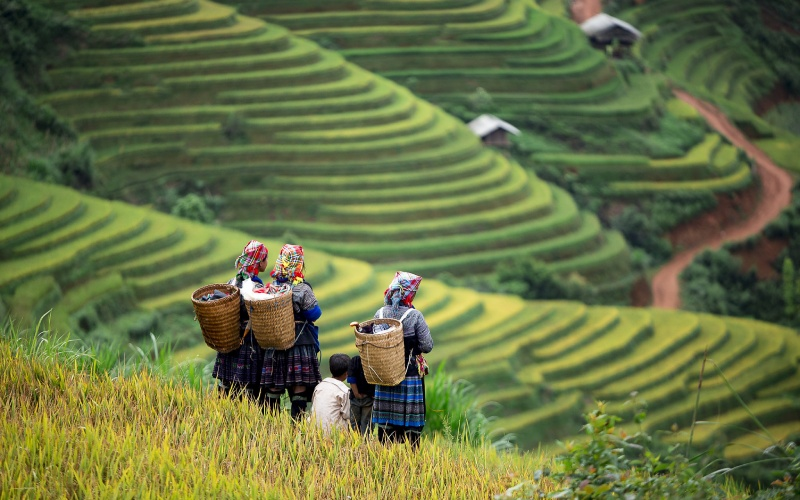
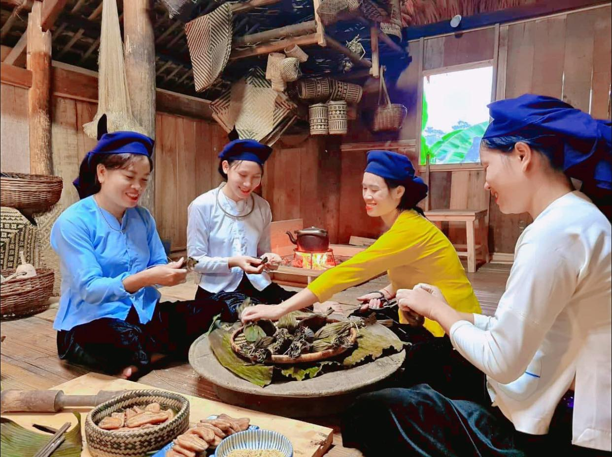
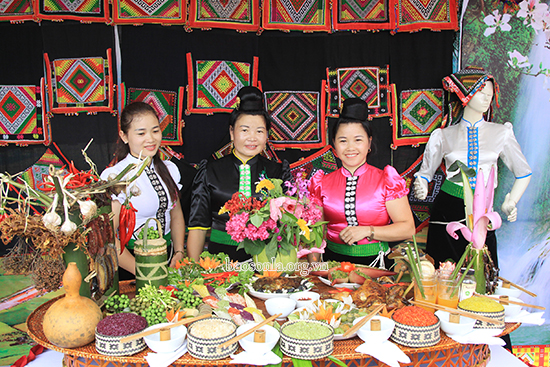

THÔNG TIN MỚI

Du lịch Tây Bắc Việt Nam là một trải nghiệm đầy màu sắc và hấp dẫn cho những ai yêu thích khám phá vẻ đẹp tự nhiên, văn hóa và con người của vùng đất này. Tây Bắc Việt Nam bao gồm các tỉnh Lào Cai, Yên Bái, Sơn La, Lai Châu, Điện Biên, và Hòa Bình. Đây là nơi có những cảnh quan đa dạng từ núi non, thác nước, rừng núi đến các bản làng dân tộc với nền văn hóa đậm đà.
Một trong những điểm du lịch nổi tiếng nhất của Tây Bắc là Sapa, Lào Cai, nổi tiếng với những cánh đồng lúa bậc thang đẹp mê hồn, đỉnh Fansipan - "Nóc nhà Đông Dương", và văn hóa của các dân tộc thiểu số như H'Mong, Dao, và Dzay. Các hành trình trekking và khám phá văn hóa dân tộc ở Sapa luôn thu hút rất nhiều du khách.
Ngoài ra, du khách cũng có thể khám phá các điểm đến khác như Mộc Châu (Sơn La) với cánh đồng hoa cải và sự yên bình của thung lũng, Điện Biên Phủ với di tích lịch sử quan trọng của cuộc chiến Điện Biên Phủ năm 1954, hoặc Hòa Bình với hồ Da và vùng rừng núi phong phú.
Du lịch Tây Bắc cũng là cơ hội để du khách thưởng thức ẩm thực đặc trưng của vùng miền, như cơm lam, lợn cắp nách, thắng cố... Đồng thời, đây cũng là dịp để trải nghiệm cuộc sống của người dân tộc thiểu số, hiểu rõ hơn về nền văn hóa, truyền thống và phong tục tập quán độc đáo của họ.
Tóm lại, du lịch Tây Bắc mang đến cho du khách những trải nghiệm độc đáo, gần gũi với thiên nhiên và văn hóa của vùng miền đất nước, là điểm đến lý tưởng cho những ai mong muốn khám phá và trải nghiệm sự đa dạng của Việt Nam

Ẩm thực Tây Bắc Việt Nam là một phần không thể thiếu trong hành trình khám phá vùng đất này. Với sự phong phú và đa dạng, ẩm thực Tây Bắc mang đậm bản sắc văn hóa dân tộc, từ cách chế biến đến cách thức thưởng thức.
Cơm lam: Đây là một món ăn truyền thống của người dân Tây Bắc, được nấu trong trúc lá, tạo ra hương vị đặc trưng và thơm ngon. Cơm lam thường được kèm với các món như thịt heo, gà hoặc cá.
Lợn cắp nách: Một món ăn phổ biến trong các buổi tiệc cưới hoặc các dịp lễ hội của người dân tộc H'Mong ở Tây Bắc. Lợn cắp nách được nướng trên lửa than và thường được thưởng thức cùng với rượu ngô.
Thắng cố: Một món ăn độc đáo của người Thái ở Tây Bắc, thắng cố là một loại thịt được cuộn vào lá chuối, sau đó được hấp và ướp gia vị. Món này có hương vị đặc trưng và thường được ăn kèm với nước mắm chua ngọt.
Rượu nếp: Rượu nếp là một phần không thể thiếu trong văn hóa ẩm thực của người dân Tây Bắc. Rượu được làm từ gạo nếp và có thể có hương vị và màu sắc đặc trưng của các loại lá, hoa, hoặc thảo mộc được sử dụng để ướp.
Các món nướng trên lửa than: Các món thịt nướng như thịt bò, thịt heo, gà được nướng trên lửa than truyền thống của người dân Tây Bắc cũng rất phổ biến và hấp dẫn.
Ngoài ra, với vùng đất giàu trái cây như mận, đào, táo, ổi..., các loại hoa quả tươi ngon cũng là một phần không thể thiếu trong bữa ăn hàng ngày của người dân địa phương và là một lựa chọn tuyệt vời cho du khách muốn thưởng thức hương vị độc đáo của vùng Tây Bắc Việt Nam.

Các điểm du lịch vùng Tây Bắc như là :
Sapa - Lào Cai: Sapa là điểm đến nổi tiếng không chỉ ở Việt Nam mà còn trên thế giới. Với cảnh quan thiên nhiên hùng vĩ, những cánh đồng lúa bậc thang, đỉnh núi Fansipan cao nhất Đông Dương, và văn hóa của các dân tộc thiểu số như H'Mong, Dao, và Dzay, Sapa thu hút hàng nghìn du khách mỗi năm.
Mộc Châu - Sơn La: Mộc Châu nổi tiếng với cảnh đẹp của những cánh đồng hoa mùa xuân, những thác nước lãng mạn và không khí trong lành. Du khách có thể tham gia các hoạt động như cưỡi ngựa, thăm các bản làng dân tộc vùng cao, hay thưởng thức ẩm thực địa phương.
Điện Biên Phủ: Nơi diễn ra trận Điện Biên Phủ lịch sử, đây là một điểm đến quan trọng cho những ai quan tâm đến lịch sử và văn hóa Việt Nam. Du khách có thể tham quan các di tích lịch sử, bảo tàng, và khám phá văn hóa độc đáo của các dân tộc vùng cao.
Pu Luông - Thung lũng xanh của Hòa Bình: Pu Luông là một khu bảo tồn thiên nhiên với cảnh quan đẹp mê hồn, những thửa ruộng bậc thang xanh mướt, và những con suối trong lành. Đây là điểm đến lý tưởng cho những ai muốn trốn khỏi thành thị, khám phá thiên nhiên hoang sơ và tận hưởng không gian yên bình.
Mai Châu - Hòa Bình: Mai Châu là một thị trấn nhỏ nằm trong thung lũng với cảnh quan hữu tình, với các bản làng dân tộc Thái truyền thống và những trải nghiệm văn hóa độc đáo. Du khách có thể tham gia các hoạt động như đi bộ đường dài, cưỡi xe đạp, hay tham quan làng nghề và thưởng thức ẩm thực địa phương.
Du lịch Tây Bắc Việt Nam không chỉ là việc khám phá vẻ đẹp thiên nhiên mà còn là cơ hội để hiểu biết sâu hơn về văn hóa, truyền thống và đời sống của các dân tộc vùng cao, mang lại những trải nghiệm độc đáo và đáng nhớ cho du khách.